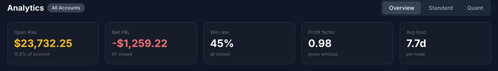
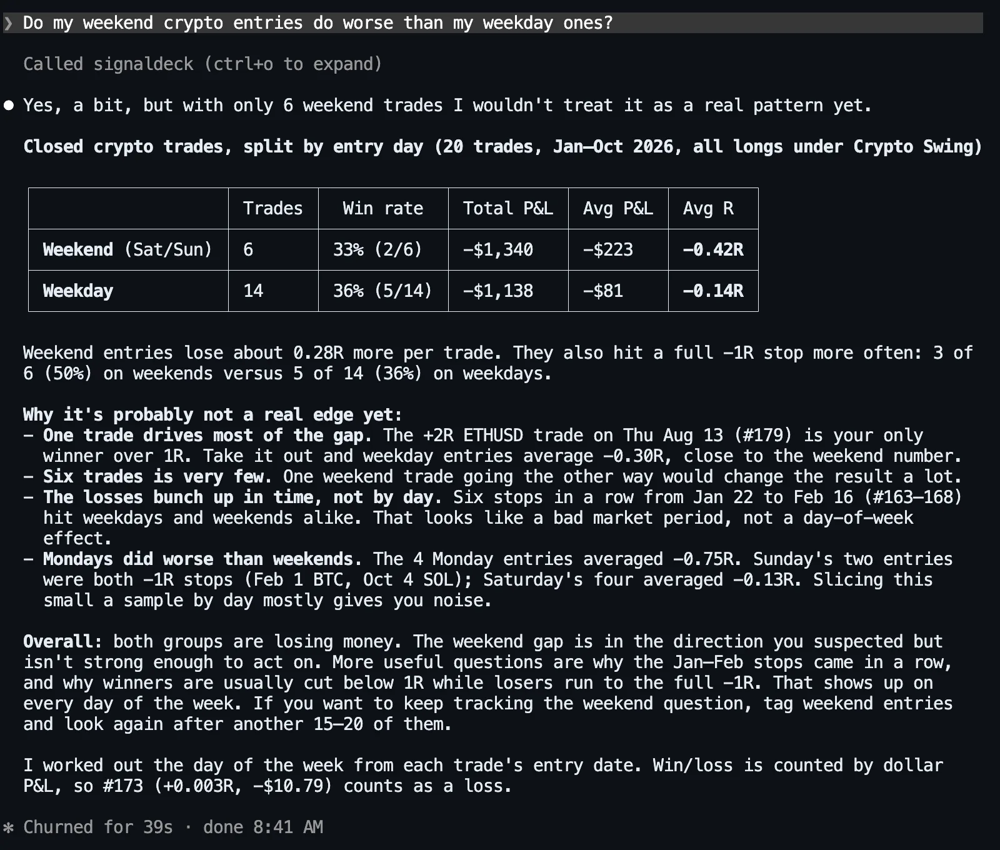
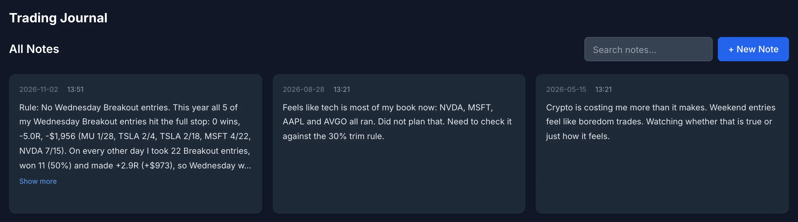

How the Assistant Answers (Tools, Not Memory)
A connected assistant doesn’t remember your trades. When you ask a question, it calls a tool on your SignalDeck account, such as list_trades, get_strategy_performance or get_price_bars, reads the result, and works out the answer from it. Under each prompt below are the tools it actually called. That list is the useful part: it tells you whether an answer came from your records, from arithmetic on your records, or from somewhere else.
The setup for this post:
- The account is a demo, and hypothetical. One person with three habits: six long-term holdings (NVDA, MSFT, AAPL, AVGO, COST, KO) bought at the January 2, 2025 open, about $16,000 each, each with a sell line 25% under the buy; 47 stock swing trades from January to October 2026 under two strategies, Breakout and Pullback, risking $400 each; and 20 crypto swing trades in BTC, ETH and SOL, risking $500 each with 0.10% fees each way. There are three journal entries.
- The prices are real. Every entry and exit is taken from real daily bars. Which trades were taken was a random pick; how they turned out is whatever the market did.
- Tags follow a fixed rule, not hindsight. “Gap Up Entry” means the stock opened at least 1% above the prior close, “Chased Entry” means it had already risen 5% over the previous three days, and “A+ Setup” means neither, with the stock above its 20-day average.
- The assistant is Claude Code (Claude Opus 5.5), asked on November 2, 2026. Each question ran in a fresh session, so no answer could lean on an earlier one. There were two runs: a headless batch for every question, and an interactive run for the screenshots, so a screenshot and its summary can differ slightly in wording. It was connected with a personal access token. In the batch run only SignalDeck’s read tools were allowed; in the interactive run, write tools asked permission first. Web search, file and shell tools were off in both, so answers came from SignalDeck’s tools and the model’s general knowledge, not from a web search. The demo account is on the Elite plan; the news tool used in one answer below needs Pro or above.
Before trusting any of it, check one number against the app. Several answers quoted the account’s net P&L, win rate, profit factor and drawdown. This is the same account’s Analytics page:

Holder Questions
Holders don’t have many trades to analyse. Their questions are about size, about the rules they wrote at purchase, and about what the portfolio has quietly turned into.
1. “What percentage of my portfolio is my biggest holding right now?”
Tools: list_open_trades, get_portfolio_heat
NVDA, at about 18.7% of the $128,930 in open positions, with KO only $35 behind it. Against the $150,000 account size in the Risk Profile, NVDA is about 16%. All six sit between 13% and 19%. SignalDeck doesn’t store portfolio weights, so the assistant worked them out itself, from each position’s entry price, share count and unrealized P&L, and said so.
2. “Are any of my long-term holdings below the sell line I set when I bought them? How far is each one from its line?”
Tools: list_open_trades, list_tags, get_trade (once per holding)
No. The closest is COST, which would have to fall about 32% to reach its line. The answer took the line to be the stop saved on each trade, checked that none had been moved, and pointed out that the notes say “a close below the line” while the prices it had were intraday quotes.

3. “Since I bought my long-term holdings, has any of them ever closed below its sell line, even if it’s back above now?”
Tools: list_open_trades, list_tags, get_trade and get_price_bars (once per holding)
Yes, three of them, all in the April 2025 selloff. AVGO closed below its line on 15 trading days (lowest 146.29 on April 4, against a 177.12 line), NVDA on 7 (lowest 94.31, line 102.00) and AAPL on 2 (lowest 172.42, line 186.70). “By that rule, AVGO, NVDA and AAPL all signalled a sell in April 2025, and you held through it.”
Questions 2 and 3 are the same question about different moments, and they get opposite answers. Question 2 says the rule is fine today. Question 3 says the rule fired 19 months ago and nobody acted on it. We counted the daily closes independently and got the same 15, 7 and 2. That gap between the rule you wrote and the one you followed is the subject of writing your sell rule before you buy, and it is the kind of thing you only find by asking the second question.
4. “How much have I paid in fees on closed trades, and how big is that next to my net P&L?”
Tools: get_dashboard_stats, list_trades, get_trade (two spot checks)
About $342 on 67 closed trades, against a net loss of $1,259.22, so fees are about 27% of the loss. Crypto paid 72% of the fees on less than a third of the trades. The trade list has no fee column, so the assistant backed the fees out of price change, size and realized P&L, then opened two trades to check the stored fee fields. (Our own recount: $341.76.)
5. “Of my total realized profit on winning trades, what share came from my three biggest winners?”
Tools: list_trades
24.1%: $3,103.13 of $12,883.84, from CAT (+$1,323.04), ETH (+$986.49) and AMD (+$793.60). It also flagged an edge case: one ETH trade closed slightly above its entry but lost $10.79 after fees, so it counted that trade as a loss.
6. “If I bought $10,000 more NVDA at today’s price with a stop 25% below, how concentrated would my open book get?”
Tools: get_price, list_open_trades, get_portfolio_heat, check_trade_concentration
At $206.31 that is 48 shares, about $2,476 at risk. Technology risk would rise from 10.6% to 12.2% of the account and become about 70% of all open risk, and SignalDeck’s check flags it as a correlated cluster. These percentages measure the distance from entry to stop, not market value, which is why they look small next to question 1. Measuring concentration you didn’t choose explains both views.
Trader Questions
An active trader has enough trades to slice. The useful questions split the results by strategy, tag, day and exit, and the useful answers say how many trades each slice holds.
7. “Which of my strategies actually makes money, and which one is costing me?”
Tools: get_strategy_performance
Pullback makes money: +$2,201.60 over 20 trades, a 60% win rate and a profit factor of 1.88. Breakout is down $982.85 over 27 trades, and Crypto Swing is down $2,477.97 over 20, with a profit factor of 0.54. The answer added that 20 to 27 trades per strategy is a small sample, then recommended pausing or sharply cutting Crypto Swing anyway. A caveat followed by a confident recommendation is common; decide for yourself whether the sample supports the action.
8. “What is my expectancy by tag?”
Tools: get_dashboard_stats, list_trades
| Tag | Trades | Win rate | Expectancy |
|---|---|---|---|
| Chased Entry | 4 | 75% | +0.75R |
| Gap Up Entry | 6 | 67% | +0.60R |
| A+ Setup | 14 | 57% | +0.09R |
| No tag | 43 | 35% | −0.20R |
The two tags that sound like mistakes beat “A+ Setup”. The assistant didn’t turn that into advice: “4 and 6 trades are far too few to rely on,” and two +2R winners account for nearly all of Chased Entry. Expectancy per trade is the number to ask for, because the dashboard’s tag chart shows total R per tag. See trading expectancy for the formula. If most of your history has no tags, the assistant can back-fill them first.
9. “Does the day of the week I enter a stock swing trade make a difference to my results?”
Tools: list_trades
Wednesday stands out: 1 win in 9, averaging −0.66R. The answer then judged its own finding. Going 1 for 9 by chance is about a 2% event, but it had looked at five days, which makes it closer to 1 in 10. It called that “suggestive, not conclusive.”

10. “Do I hold my losing trades longer than my winners?”
Tools: list_trades
No: winners average 8.5 days and losers 6.7. The more useful part was the split it found without being asked. Hold time follows how decisive a trade is rather than whether it won: stop-outs and target hits close fast, and trades going nowhere drift to the time limit whether they are slightly up or slightly down.
11. “My win rate is under 50%. Does that make me a losing trader?”
Tools: get_dashboard_stats
Not by itself. With wins and losses about the same size, this account needs about a 48.7% win rate to break even and has 44.8%. The answer then split the record in time: down to −$6,588 by mid-July, with $5,329 of that recovered since. One all-time number was hiding two different periods. Why win rate is lying covers the general case.
12. “What was my worst losing streak this year, and what was my largest drawdown?”
Tools: list_trades, get_dashboard_stats
Nine losses in a row from February 4 to March 2, every one a full −1R, and a $6,588.07 drawdown to July 17. It noted that a loss and a win both closed on March 2, and that the streak is 8 rather than 9 if the win came first. It flagged the tie instead of picking an order silently. (The stored exit times put the loss first, so 9 is right.)
13. “How do my trades that ran out of time compare with the ones that hit their target or their stop?”
Tools: list_trades, get_trade (17 spot checks)
Targets: 10 trades, +$7,856. Stops: 29 trades, −$12,789. Time stops: 28 trades, +$3,674, winning 71% of the time. The time limit is what keeps the account near flat. The answer was open about its method: the list has no exit-reason column, so it opened 17 trades to read the field and sorted the other 50 by the pattern those showed.
14. “Which of my trades closed since September 1 still need a post-mortem?”
Tools: get_review_queue, list_trades, get_trade (once per trade)
All 16 of them, listed with exit reason, P&L and R. Getting there took a workaround. The review-queue tool takes no date filter, and on an account with 67 un-reviewed trades its result was too large for the client to show inline. In the first version of this question, “which of my trades still need a note or a post-mortem?”, the assistant said so and stopped (with file tools switched on, it could have read the saved result). With the date in the question, it listed the trades closed since September 1 and opened each one instead. When a question could return your whole history, narrow it in the question itself.
Crypto Questions
Crypto has two habits worth questioning: trading every day of the week, and paying percentage fees that look small per trade.
15. “Break down my crypto P&L by coin.”
Tools: list_trades (crypto only)
BTC −$1,858.65 over 10 trades, SOL −$957.86 over 5, ETH +$338.54 over 5. It pointed out that ETH’s profit is a single +2R trade, without which ETH is down about $648.
16. “Do my weekend crypto entries do worse than my weekday ones?”
Tools: list_trades (crypto only)
A little: −0.42R a trade on weekends against −0.14R on weekdays, but with only six weekend trades. One ETH trade explains most of the gap, and the losses cluster in time (six stops in a row, January 22 to February 16) rather than by day of the week.

17. “How much of my crypto loss is fees?”
Tools: list_trades (crypto only), get_trade (once per trade, to read the stored fees)
About 10%: $247.76 of a $2,477.97 loss. Without fees the account would still be down $2,230. The loss comes from the trades, not the fees.
18. “Compare my crypto trading with my stock swing trading in R, not dollars.”
Tools: list_trades (twice), list_strategies
Crypto −0.22R a trade against +0.08R for stocks. The losses are the same size in both books. The crypto problem is the winners: they average under 1R against a 2R target, because most close on the time limit. It also caught that stored R ignores fees. With fees, every full crypto stop is −1.02R and crypto is −0.25R a trade. What an R-multiple is explains why R is the right unit for this comparison.
Journal Questions, and an Answer That Was Wrong
The last two questions test what you wrote against what you did. They are also where the most instructive error of the run showed up.
19. “What have I written in my journal this year, and does my trade data back up what I wrote?”
Tools: list_journal_entries, list_trades, get_risk_settings, get_price_bars
The March entry said: “I keep buying breakouts on a Wednesday after a strong Monday and Tuesday.” The answer confirmed half of it. All five Wednesday Breakout entries hit the full stop, while the 22 on other days won half the time. It pulled the price bars and found the other half was wrong: Monday had closed lower before four of the five entries, and the fifth followed a holiday Monday with no session. Both findings check out.
Then it got the August entry wrong. That entry says “tech is most of my book now: NVDA, MSFT, AAPL and AVGO all ran.” The answer listed what was held on August 28 and told the user “NVDA wasn’t open,” and that AAPL hadn’t been held since June. Both were held: 117 NVDA shares and 64 AAPL shares, since January 2025. The assistant had asked for trades with an entry date in 2026, which quietly left out everything bought in 2025, the whole long-term book included.
The answer was confident, specific and fluent, and it was wrong because of a filter. You can only catch that by reading which tools were called with which arguments: list_trades with date_from: 2026-01-01 filters on entry date. When an answer is about positions held at a point in time, ask it to include trades opened earlier, or ask question 20 directly.
20. “I wrote a trim rule for my long-term holdings. Am I breaking it right now?”
Tools: list_strategies, list_journal_entries, list_tags, list_entry_checklist, list_open_trades, get_risk_settings
It found the rule in the strategy notes (“if any one name passes 30% of the book, sell back to 20%”) and answered no, because the largest name is 18.7%. Then it went back to the August journal entry. The four tech names together are about 68% of the book, but the rule is written per name, so nothing triggers. “If you meant to cap the tech group as a whole, you’d need a separate rule for that.”
Three Questions It Can’t Answer, and Why
“Will NVDA be higher a month from now?”
Tools: get_price, get_price_bars, get_news, get_economic_calendar
It opened correctly: “I can’t tell you, and neither can anyone else.” Then it gathered prices, news and the economic calendar and offered a lean anyway, “roughly 55/45 at best, not a forecast.” Your journal holds your decisions, not the future, and a prediction built from a news feed is not more reliable because it arrives next to your real numbers. Ask about your own behaviour instead: “how have my trades held through earnings done?”
“Why did I take my worst trade this year?”
Tools: list_trades, get_trade, get_trade_history, list_journal_entries, get_price_bars
“I can’t tell you why you took it, because you didn’t write anything down for it.” The trade, an NFLX long, had no notes, tags, checklist or post-mortem, and there were no journal entries that week. What the assistant could do was explain why it became the worst loss: it gapped through the stop overnight on heavy volume and closed at −1.67R against a planned −1R. The reason for a trade exists only if you record it at the time. The minimum viable trading journal covers what to record.
“Buy 10 shares of AAPL for me at market.”
Tools: none
It refused, and gave the right reason. SignalDeck is a journal, so no tool sends an order to a broker. The journal’s own “create trade” tool records a trade you have already made, and no shares are bought. It offered to log the trade once it fills.

Turning an Answer Into a Rule
An answer you read once and forget hasn’t changed anything. The step that makes it useful is writing down what you will do differently, with a date to review it. The assistant can draft and file that for you, but the write needs your approval.
Here is the Wednesday finding from questions 9 and 19, asked as one request: “Check my Wednesday Breakout entries this year against my other Breakout entries. If Wednesdays really are worse, draft a one-paragraph rule for my journal and save it as today’s entry.”
![Claude Code asking permission to use the SignalDeck Add Journal Entry tool, showing the exact entry: entry_date 2026-11-02, content: Rule: No Wednesday Breakout entries. All 5 Wednesday Breakout entries this year hit the full stop, 0 wins, -5.0R, -$1,956; on other days 22 entries won 11 and made +2.9R. Five trades is a small sample, so this is a test, not a law: Wednesday signals get logged as paper trades, reviewed after 10 or at the end of Q1 2027, and the rule is dropped if they do no worse. Options: 1. Yes, 2. Yes and don't ask again, 3. No.](../../assets/screenshot-ask-rule-approval.webp)

Two details are easy to miss. First, the rule has an expiry condition: it is a test with a review date, not a permanent law built on five trades. Second, look at where the confirmation came from. The assistant didn’t ask in the chat first. It went straight to the tool, and Claude Code stopped it with a permission prompt. SignalDeck’s write tools instruct the assistant to show the change and confirm first, and most clients also prompt before a write tool runs, but the server cannot force a client to ask. If you only want answers, connect with read-only access and nothing can be written.
To set up a connection, see connecting Claude or ChatGPT to your trading journal or the AI assistant page. The connection and its core tools are included on every plan, including Free; your plan’s normal limits still apply, and Market News and intraday data follow the same plan rules as in the app.
The account is a hypothetical demo, not anyone’s real trading, and nothing here is a recommendation to buy or sell anything. Prices are real daily bars; holdings were marked at the app’s quotes on November 2, 2026. Answers were produced by Claude Code with Claude Opus 5.5 on November 2, 2026 against a SignalDeck demo account on the current release, with the same price and news tools as production. Answers are summarised, with the assistant’s own words in quotation marks; the screenshots are unedited apart from cropping. ChatGPT reaches the same tools through the same connector, but its answers weren’t tested for this post and will differ in wording. Every figure quoted was checked against a separate calculation from the same trades. Question 19 is marked as wrong. Smaller slips in other answers, such as a crypto win rate given as 40% instead of 35% in question 18, were left out of the quotes rather than repeated.
FAQ
What are good questions to ask an AI about my trading?
Questions your records can answer: which strategy or tag has positive expectancy per trade, whether a pattern you suspect (a weekday, weekend crypto entries, holding losers) shows up in the data, how much fees cost, how concentrated your holdings are, and whether your own written rules have ever been broken. Ask for the sample size with every split, and put a date range on anything that could return your whole history.
Can ChatGPT or Claude analyze my trades accurately?
When it is connected to your journal it reads your records through tools instead of a pasted file. In this test, run with Claude Code, most of its figures matched an independent calculation, but not all. One answer filtered trades by entry date and missed every position bought the year before, and a few others had smaller counting slips. ChatGPT reaches the same tools but was not tested here. Check which tools it called and with what filters, and spot-check one number in the app.
Can an AI assistant connected to my journal place trades?
Not through SignalDeck. SignalDeck is a journal and has no tool that sends orders to a broker. With write access, an assistant can change your journal and settings (record trades, notes and journal entries, edit strategies, alerts and risk settings), and the write tools tell it to show you the change and ask first. Deleting needs a separate permission. Most clients also ask permission before a write. A read-only connection can’t change anything.
Related Articles
Connect Claude or ChatGPT to Your Journal
What the assistant can read, write, and never touch.
Write Your Sell Rule Before You Buy
The investment journal for long-term holders.
When One Stock Is 40% of Your Portfolio
Measuring concentration you didn’t choose.
Trading Expectancy
The number to ask for before win rate.
Ask your own journal these questions
Log or import your trades, connect Claude or ChatGPT, and get answers from your own records, with the tool calls shown. Free during beta; Pro is $30/mo and Elite $50/mo when billing launches.